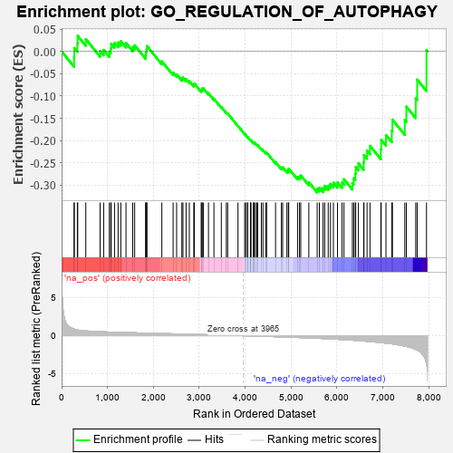
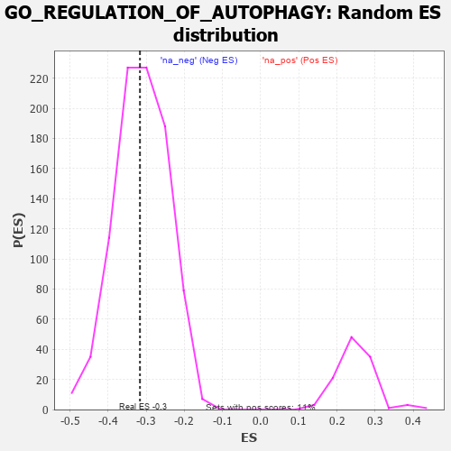

| | | Dataset | 7d |
| Phenotype | NoPhenotypeAvailable |
| Upregulated in class | na_neg |
| GeneSet | GO_REGULATION_OF_AUTOPHAGY |
| Enrichment Score (ES) | -0.3163827 |
| Normalized Enrichment Score (NES) | -1.0115207 |
| Nominal p-value | 0.4864865 |
| FDR q-value | 0.85784787 |
| FWER p-Value | 1.0 |
Table: GSEA Results Summary

Fig 1: Enrichment plot: GO_REGULATION_OF_AUTOPHAGY
Profile of the Running ES Score & Positions of GeneSet Members on the Rank Ordered List
| PROBE | GENE SYMBOL | GENE_TITLE | RANK IN GENE LIST | RANK METRIC SCORE | RUNNING ES | CORE ENRICHMENT | | 1 | ULK1 | | | 272 | 0.875 | -0.0133 | No |
| 2 | HGF | | | 276 | 0.870 | 0.0075 | No |
| 3 | DAPK2 | | | 343 | 0.754 | 0.0174 | No |
| 4 | GSK3A | | | 351 | 0.745 | 0.0346 | No |
| 5 | HTRA2 | | | 527 | 0.621 | 0.0275 | No |
| 6 | TFEB | | | 839 | 0.522 | 0.0007 | No |
| 7 | WDR6 | | | 916 | 0.504 | 0.0033 | No |
| 8 | AKT1 | | | 1040 | 0.476 | -0.0008 | No |
| 9 | XPA | | | 1070 | 0.469 | 0.0069 | No |
| 10 | FOXK2 | | | 1081 | 0.467 | 0.0170 | No |
| 11 | SCOC | | | 1153 | 0.453 | 0.0190 | No |
| 12 | KAT8 | | | 1231 | 0.442 | 0.0200 | No |
| 13 | PARL | | | 1290 | 0.432 | 0.0231 | No |
| 14 | EXOC1 | | | 1403 | 0.409 | 0.0188 | No |
| 15 | QSOX1 | | | 1550 | 0.382 | 0.0096 | No |
| 16 | NPRL3 | | | 1592 | 0.375 | 0.0135 | No |
| 17 | UVRAG | | | 1831 | 0.332 | -0.0087 | No |
| 18 | GATA4 | | | 1837 | 0.330 | -0.0013 | No |
| 19 | TRIM5 | | | 1852 | 0.327 | 0.0049 | No |
| 20 | FOXK1 | | | 1859 | 0.326 | 0.0121 | No |
| 21 | NPRL2 | | | 2184 | 0.278 | -0.0223 | No |
| 22 | MET | | | 2430 | 0.240 | -0.0476 | No |
| 23 | HUWE1 | | | 2506 | 0.225 | -0.0516 | No |
| 24 | BAG3 | | | 2620 | 0.209 | -0.0609 | No |
| 25 | KAT5 | | | 2644 | 0.206 | -0.0588 | No |
| 26 | PHB2 | | | 2712 | 0.197 | -0.0625 | No |
| 27 | SCFD1 | | | 2783 | 0.185 | -0.0669 | No |
| 28 | DAPK3 | | | 2880 | 0.169 | -0.0750 | No |
| 29 | MTM1 | | | 2893 | 0.168 | -0.0724 | No |
| 30 | UFL1 | | | 3041 | 0.144 | -0.0876 | No |
| 31 | FEZ1 | | | 3055 | 0.142 | -0.0858 | No |
| 32 | KEAP1 | | | 3063 | 0.141 | -0.0832 | No |
| 33 | TIGAR | | | 3091 | 0.138 | -0.0833 | No |
| 34 | MTMR8 | | | 3200 | 0.122 | -0.0941 | No |
| 35 | RAB8A | | | 3319 | 0.102 | -0.1066 | No |
| 36 | CDK5 | | | 3480 | 0.080 | -0.1249 | No |
| 37 | MAPK3 | | | 3589 | 0.062 | -0.1371 | No |
| 38 | WAC | | | 3618 | 0.056 | -0.1393 | No |
| 39 | SMG1 | | | 3843 | 0.021 | -0.1672 | No |
| 40 | VPS35 | | | 3989 | -0.006 | -0.1855 | No |
| 41 | SNX32 | | | 4012 | -0.010 | -0.1880 | No |
| 42 | ATG5 | | | 4051 | -0.016 | -0.1925 | No |
| 43 | WDR41 | | | 4053 | -0.016 | -0.1922 | No |
| 44 | MTOR | | | 4114 | -0.025 | -0.1992 | No |
| 45 | EXOC8 | | | 4120 | -0.026 | -0.1993 | No |
| 46 | ABL1 | | | 4125 | -0.027 | -0.1991 | No |
| 47 | EXOC4 | | | 4182 | -0.039 | -0.2053 | No |
| 48 | RRAGD | | | 4183 | -0.039 | -0.2043 | No |
| 49 | SESN1 | | | 4192 | -0.041 | -0.2044 | No |
| 50 | RRAGA | | | 4223 | -0.046 | -0.2071 | No |
| 51 | RPTOR | | | 4252 | -0.050 | -0.2094 | No |
| 52 | NRBP2 | | | 4274 | -0.055 | -0.2107 | No |
| 53 | ADRB2 | | | 4352 | -0.068 | -0.2189 | No |
| 54 | MTMR9 | | | 4387 | -0.074 | -0.2214 | No |
| 55 | CDC37 | | | 4446 | -0.084 | -0.2267 | No |
| 56 | LRRK2 | | | 4467 | -0.087 | -0.2271 | No |
| 57 | ITPR1 | | | 4661 | -0.130 | -0.2484 | No |
| 58 | PIM2 | | | 4789 | -0.155 | -0.2608 | No |
| 59 | FBXW7 | | | 4816 | -0.161 | -0.2602 | No |
| 60 | TLK2 | | | 4909 | -0.179 | -0.2675 | No |
| 61 | EP300 | | | 4941 | -0.186 | -0.2669 | No |
| 62 | EXOC7 | | | 4948 | -0.188 | -0.2631 | No |
| 63 | FLCN | | | 5140 | -0.235 | -0.2817 | No |
| 64 | HDAC6 | | | 5183 | -0.244 | -0.2810 | No |
| 65 | ATM | | | 5210 | -0.249 | -0.2783 | No |
| 66 | FZD5 | | | 5386 | -0.292 | -0.2934 | No |
| 67 | WDR24 | | | 5568 | -0.338 | -0.3082 | Yes |
| 68 | LARP1 | | | 5616 | -0.349 | -0.3057 | Yes |
| 69 | MTCL1 | | | 5697 | -0.374 | -0.3067 | Yes |
| 70 | DAP | | | 5732 | -0.386 | -0.3017 | Yes |
| 71 | MTMR3 | | | 5809 | -0.408 | -0.3014 | Yes |
| 72 | ATG7 | | | 5858 | -0.420 | -0.2973 | Yes |
| 73 | STK11 | | | 5922 | -0.443 | -0.2945 | Yes |
| 74 | XBP1 | | | 6011 | -0.475 | -0.2941 | Yes |
| 75 | ATG13 | | | 6110 | -0.508 | -0.2942 | Yes |
| 76 | ROCK1 | | | 6152 | -0.520 | -0.2868 | Yes |
| 77 | IFT88 | | | 6335 | -0.590 | -0.2955 | Yes |
| 78 | NPC1 | | | 6364 | -0.602 | -0.2845 | Yes |
| 79 | RALB | | | 6399 | -0.617 | -0.2738 | Yes |
| 80 | HSPB8 | | | 6408 | -0.621 | -0.2597 | Yes |
| 81 | HERC1 | | | 6467 | -0.647 | -0.2513 | Yes |
| 82 | CLN3 | | | 6580 | -0.699 | -0.2486 | Yes |
| 83 | RNF41 | | | 6588 | -0.703 | -0.2324 | Yes |
| 84 | RAB5A | | | 6655 | -0.741 | -0.2227 | Yes |
| 85 | GSK3B | | | 6719 | -0.768 | -0.2121 | Yes |
| 86 | FBXL2 | | | 6956 | -0.911 | -0.2199 | Yes |
| 87 | DNM1L | | | 6963 | -0.913 | -0.1984 | Yes |
| 88 | MFSD8 | | | 7067 | -0.977 | -0.1878 | Yes |
| 89 | TSPO | | | 7194 | -1.065 | -0.1779 | Yes |
| 90 | MFN2 | | | 7208 | -1.081 | -0.1533 | Yes |
| 91 | CPTP | | | 7477 | -1.373 | -0.1539 | Yes |
| 92 | VDAC1 | | | 7512 | -1.409 | -0.1240 | Yes |
| 93 | BOK | | | 7715 | -1.817 | -0.1055 | Yes |
| 94 | CASP3 | | | 7747 | -1.902 | -0.0632 | Yes |
| 95 | DAPK1 | | | 7950 | -3.767 | 0.0027 | Yes |
Table: GSEA details [plain text format]

Fig 2: GO_REGULATION_OF_AUTOPHAGY: Random ES distribution
Gene set null distribution of ES for GO_REGULATION_OF_AUTOPHAGY